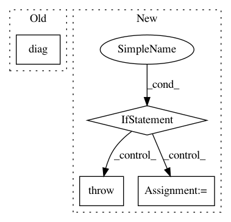

24efdf4f57841d5d73fda3745b96a1b102ca484f,skcuda/linalg.py,,diag,#Any#,1118
Before Change
block_dim, grid_dim = misc.select_block_grid_sizes(dev, d_gpu.shape)
diag = _get_diag_kernel(use_double, use_complex)
diag(v_gpu, d_gpu, np.uint32(v_gpu.size),
block=block_dim,
grid=grid_dim)
return d_gpu
After Change
// Initialize output matrix:
N = len(v_gpu)
if N <= 0:
raise ValueError("N must be greater than 0")
d_gpu = misc.zeros((N, N), v_gpu.dtype, allocator=alloc)
func = _get_diag_kernel(v_gpu.dtype)
func(d_gpu, v_gpu, N, slice=slice(0, N))
return d_gpu
@context_dependent_memoize
In pattern: SUPERPATTERN
Frequency: 3
Non-data size: 4
Instances
Project Name: lebedov/scikit-cuda
Commit Name: 24efdf4f57841d5d73fda3745b96a1b102ca484f
Time: 2015-11-25
Author: lev@columbia.edu
File Name: skcuda/linalg.py
Class Name:
Method Name: diag
Project Name: nipy/dipy
Commit Name: 30eadc321c1755eca615a39bb4b8b5fc1e769f70
Time: 2019-03-10
Author: rafaelnh21@gmail.com
File Name: dipy/reconst/mdki.py
Class Name:
Method Name: _wls_fit_mdki
Project Name: stellargraph/stellargraph
Commit Name: 789d65f38f0949a3f03f61908a207cb558746769
Time: 2019-12-19
Author: andrew.docherty@data61.csiro.au
File Name: stellargraph/layer/preprocessing_layer.py
Class Name: GraphPreProcessingLayer
Method Name: call